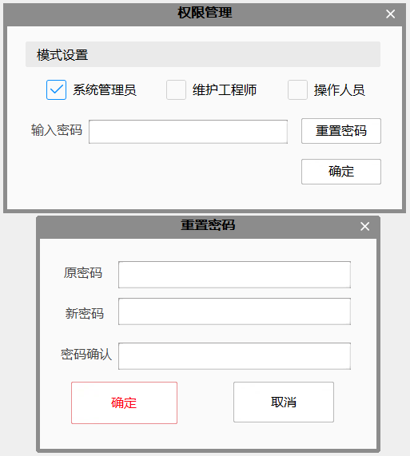

权限按照操作流程图的权限高低，由高到低分为三种权限，系统管理员、工程师、操作人员。
系统管理员：拥有全部权限
工程师：无权限做和业务流程相关的操作：如修改数据链、拖拽工具等。拥有更改模板、硬件参数等权限。
操作人员：可以操作工程的保存、可切换工具查看状态、可切换运行/编辑界面，无权改变业务流程和模板。
使用方式：默认的工程未设置密码，勾选权限并点击确定，即可设置为对应权限。如需设置密码点击“重置密码”按钮。
